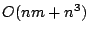
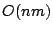

|
Keywords: phylogenetic networks, perfect phylogeny, recombination, evolution, sequence analysis, graph algorithms
A phylogenetic network is a generalization of a phylogenetic tree, allowing structural properties that are not tree-like. With the growth of genomic data, much of which does not fit ideal tree models, and the increasing appreciation of the genomic role of such phenomena as recombination, recurrent mutation, horizontal gene transfer, gene conversion, and mobile genetic elements, there is greater need to understand phylogenetic networks. However, to date, very little has been published on algorithmic and combinatorial aspects of phylogenetic networks. One notable exception is the paper by Wang et al.[5]. Other related papers include [2,3,4]
Wang et al. [5] introduced the problem of
constructing a phylogenetic network for a set of  binary sequences derived from the all-0 ancestral sequence, when
each site in the sequence can change from 0 to 1 at most once in
the network, and recombination between sequences is allowed. This
differs from the classic ``perfect phylogeny" problem for binary
sequences [1] by the allowance
of recombination between sequences. Wang et al. showed that the
problem of finding a phylogenetic network that minimizes the number
of recombination events is NP-hard, but gave a polynomial-time
algorithm (
binary sequences derived from the all-0 ancestral sequence, when
each site in the sequence can change from 0 to 1 at most once in
the network, and recombination between sequences is allowed. This
differs from the classic ``perfect phylogeny" problem for binary
sequences [1] by the allowance
of recombination between sequences. Wang et al. showed that the
problem of finding a phylogenetic network that minimizes the number
of recombination events is NP-hard, but gave a polynomial-time
algorithm ( )-time, for
)-time, for  sequences of length
sequences of length  each) that was intended to
recognize cases of ``cycle-disjoint recombination". That is, the
algorithm was to determine if the sequences could be derived on a
phylogenetic network where no two ``recombination cycles" share a
node. We call such a phylogenetic network a ``galled-tree". When
the algorithm recognizes that the input data can be generated on a
galled-tree, it finds one that minimizes the number of
recombination events. While cycle disjointness is a strong
assumption, it is likely to hold under certain circumstances when
the recombination rate is not too high. The model also has
applications in sequence analysis of particular biological
sequences, for example, to search for intervals in a chromosome
where the sequences roughly fit a perfect phylogeny model, but do
not exactly fit one.
each) that was intended to
recognize cases of ``cycle-disjoint recombination". That is, the
algorithm was to determine if the sequences could be derived on a
phylogenetic network where no two ``recombination cycles" share a
node. We call such a phylogenetic network a ``galled-tree". When
the algorithm recognizes that the input data can be generated on a
galled-tree, it finds one that minimizes the number of
recombination events. While cycle disjointness is a strong
assumption, it is likely to hold under certain circumstances when
the recombination rate is not too high. The model also has
applications in sequence analysis of particular biological
sequences, for example, to search for intervals in a chromosome
where the sequences roughly fit a perfect phylogeny model, but do
not exactly fit one.
Unfortunately, the algorithm in [5] is incomplete and only provides a sufficient and not a necessary test for the existence of a galled-tree for the data. We show this by example.
In this paper we do several things. By more deeply analyzing the combinatorial constraints on cycle-disjoint phylogenetic networks, we obtain an algorithm that runs in -time and is guaranteed to be both a necessary and sufficient test for the existence of a galled-tree for the data. If there is a galled-tree for the data, the algorithm constructs a ``canonical" galled-tree that simultaneously minimizes the number of recombination events, the number of mutations occurring on recombination cycles, and the number of branches off of recombination cycles. The effect is that the canonical galled-tree is the phylogenetic network that explains the input sequences in a way that is the most ``tree-like", exposing the places where the tree model must be modified. We prove that the cycles and the mutations on them in the canonical solution must be in every galled-tree solution for the data. The algorithm also obtains a count of the number of galled-trees that exist for the input data, and can generate these in linear time for each one, starting from the canonical galled-tree. This approach also establishes that the solution is ``nearly-unique", in that the different solutions differ only in minor ways.
In addition to solving the galled-tree problem efficiently, we show that the ``Maximum Compatibility Problem" is solvable in  time for sequences that can be derived on a galled-tree. The Maximum Compatibility Problem is to find a largest set of mutations in the data that can be explained by a perfect phylogeny. Extracting and using such a subset of mutations is a common approach taken in practice to handling sequences that cannot be derived on a perfect phylogeny, although the problem of finding this subset is NP-hard in general.
More broadly, in this paper we introduce a set of graph-theoretic observations about recombination cycles that can be generalized, and suggest ways to develop algorithms for more complex (special-case) data, where recombination cycles are allowed to intersect, but in constrained ways. These generalizations will be explored in a future paper.